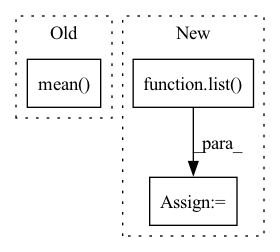

Pattern ID :16043

Before Change
if len(metrics):
precision, recall, average_precision, f1, ap_class = ap_per_class(*metrics)
if self.iou_thres.is_range():
precision, recall, average_precision, f1 = precision[:, 0], recall[:, 0], average_precision.mean(
1), average_precision[:, 0]
mean_precision, mean_recall, mean_ap, mf1 = precision.mean(), recall.mean(), average_precision.mean(), f1.mean()
After Change
accumulated_matching_info = getattr(self, "matching_info")
if len(accumulated_matching_info):
matching_info_tensors = [torch.cat(x, 0) for x in list(zip(*accumulated_matching_info))]
// shape (n_class, nb_iou_thresh)
ap, precision, recall, f1, unique_classes = compute_detection_metrics(
In pattern: SUPERPATTERN
Frequency: 4
Non-data size: 3
Instances
Fragment ID: 53841221
Project Name: deci-ai/super-gradients
Commit Name: 90fb0a6d0e7aa883b1f583c9c83b4c2d3525e9d2
Time: 2022-07-28
Author: 80472096+shaydeci@users.noreply.github.com
File Name: src/super_gradients/training/metrics/detection_metrics.py
M Class Name: DetectionMetrics
N Class Name: DetectionMetrics
M Method Name: compute(1)
N Method Name: compute(1)
M Parent Class: Metric
N Parent Class: Metric
M File Name: src/super_gradients/training/metrics/detection_metrics.py
N File Name: src/super_gradients/training/metrics/detection_metrics.py
M Start Line: 154
M End Line: 165
N Start Line: 99
N End Line: 116
'>
Before Change
def calc_bandwidth(set1, set2, kernel_num=10):
batch_size = set1.size(0)
seq_len = set2.size(0)
set1_centre = set1.mean(-1).view(-1, 1)
set2_centre = set2.mean(-1).view(1, -1)
distance = (set1_centre - set2_centre).pow(2).pow(0.5).max(-1)[0].max(-1)[0]
delta_list = [distance / np.sqrt(2 * (i + 1)) for i in range(kernel_num)]
After Change
kernel_mean = torch.cat([first_kernel, third_kernel], dim=-1).mean(-1).max(-1)[0]
particle_num = first_kernel.size(-1)
kernel_num
scale_list = list(np.linspace(min_scale, max_scale, num=kernel_num))
bandwidth_list = [(kernel_mean * scale).view(-1, 1, 1).detach() for scale in scale_list]
first_items = 0
third_items = 0
for h in bandwidth_list:
'>
Fragment ID: 53841207
Project Name: deligentfool/dqn_zoo
Commit Name: 1ac00bac8d92870064cdcf754b6e29278f14ae79
Time: 2020-11-04
Author: 1027660817@qq.com
File Name: MMD_DQN/mmd_dqn.py
M Class Name: AnonimousClass
N Class Name: AnonimousClass
M Method Name: calc_bandwidth(5)
N Method Name: calc_bandwidth(3)
M Parent Class:
N Parent Class:
M File Name: MMD_DQN/mmd_dqn.py
N File Name: MMD_DQN/mmd_dqn.py
M Start Line: 33
M End Line: 40
N Start Line: 18
N End Line: 33
'>
Before Change
// loss = loss_fn(out, data["target"])
// _, batch_preds = torch.max(out.data, 1)
// fin_loss += loss.item()
predicted_list.append(out.mean().item())
target_hr_list.append(data["target"].item())
return target_hr_list, predicted_list
After Change
target_hr_batch = list(data["target"].mean(dim=1, keepdim=True).squeeze(1).detach().numpy())
target_hr_list.extend(target_hr_batch)
predicted_hr_batch = list(outputs.squeeze(2).mean(dim=1, keepdim=True).squeeze(1).detach().numpy())
predicted_list.extend(predicted_hr_batch)
return target_hr_list, predicted_list, fin_loss / len(data_loader)
'>
Fragment ID: 53841223
Project Name: anweshcr7/rhythmnet
Commit Name: 465030f9efb5f86a94572239a5147c1c667f24fd
Time: 2021-02-23
Author: anwesh.marwade@beyondsports.nl
File Name: src/engine.py
M Class Name: AnonimousClass
N Class Name: AnonimousClass
M Method Name: eval_fn(3)
N Method Name: eval_fn(3)
M Parent Class:
N Parent Class:
M File Name: src/engine.py
N File Name: src/engine.py
M Start Line: 37
M End Line: 51
N Start Line: 41
N End Line: 63
'>
Before Change
loss.backward()
optimizer.step()
target_hr_list.append(data["target"].item())
predicted_list.append(outputs[2].mean().item())
fin_loss += loss.item()
return target_hr_list, predicted_list, fin_loss / len(data_loader)
After Change
target_hr_batch = list(data["target"].mean(dim=1, keepdim=True).squeeze(1).detach().numpy())
target_hr_list.extend(target_hr_batch)
predicted_hr_batch = list(outputs.squeeze(2).mean(dim=1, keepdim=True).squeeze(1).detach().numpy())
predicted_hr_list.extend(predicted_hr_batch)
fin_loss += loss.item()
return target_hr_list, predicted_hr_list, fin_loss / len(data_loader)
'>
Fragment ID: 53841224
Project Name: anweshcr7/rhythmnet
Commit Name: 465030f9efb5f86a94572239a5147c1c667f24fd
Time: 2021-02-23
Author: anwesh.marwade@beyondsports.nl
File Name: src/engine.py
M Class Name: AnonimousClass
N Class Name: AnonimousClass
M Method Name: train_fn(4)
N Method Name: train_fn(4)
M Parent Class:
N Parent Class:
M File Name: src/engine.py
N File Name: src/engine.py
M Start Line: 12
M End Line: 28
N Start Line: 12
N End Line: 33